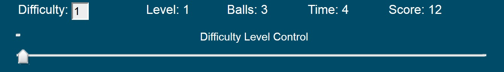

When you initially load the Dodge Bouncing Balls web page you should see something similar to the picture below.
The picture located below shows all of the buttons that will be displayed during the course of the game.
The purpose and use of each button/area will be explained below.
Damage Meter: this shows how much damage the user's ball has incurred. The meter starts empty (white) and fills with orange as damage occurs. Once the meter is completely filled the game ends.
Ball zone: the game itself will take place within this white rectangular area. Balls which the user most avoid will be generated on the top half of this area. The balls will bounce against the outer edges of this area.
User Ball: this is the ball that the user controls during the game. You can move the ball by pressing the up, down, left, or right arrow keys. Movement is restricted to the white 'Ball zone' area.
Start: click this button to begin a new game or to unpause a currently paused game. Once a game has started this button will disappear unless the 'Pause' button or 'New Game' button is pressed.
Pause: click this button to pause an in-progress game. This button is initially hidden but will become visible once a game has started.
Next Level: this is a popup which will be displayed each time the user reaches a new level. New levels can be reached every ten seconds. By default, this pop-up is hidden until the next level is reached; it is then briefly displayed.
Toggle Hints: click this button to display hint popups which give additional information about the game. The pop-ups are hidden by default but can be toggled between hidden and visible by clicking this button.
Add New Ball: click this button while a game is in progress to add a new ball to the ball zone. This button is hidden by default and will only be visible while a game is in progress (and un-paused).
New Game: this button is hidden by default. When a game ends this button will appear; click the button to reset the game.
The picture below shows the game's status indicators in greater detail.
Difficulty: this displays the current difficulty setting. The minimum difficulty is 1 and the maximum is 5. The difficulty setting itself if controlled by the 'Difficulty Control Level' slider.
Level: this displays the level the user is currently on. A new level is reached every ten seconds.
Balls: this displays the current number of balls (excluding the user's ball) that are currently on screen.
Time: this displays how much time has elapsed (in seconds) since the game started.
Score: this displays the user's current score. The score is a product of time and the number of balls on screen; the higher the difficulty and the longer the time elapsed the more quickly the score accrues.
Difficulty Control Level: this slider controls the difficulty setting. The minimum difficulty level is 1 (far left value) and the maximum value is 5 (far right value). You can change the difficulty at any time during the game, however the new difficulty setting will only take effect once the game has been un-paused or a new game is started (after the difficulty setting is changed).
Goal: the goal of the game is to acquire a high score. The longer you can last and the higher the difficulty level the higher your score will be.
Controls: you control the large orange ball with the arrow keys on a keyboard. Pressing an arrow will make the user ball move in the corresponding direction (for example, pressing the up arrow will make the user ball move up on the screen).
Game Over: when your damage meter is full (due to your ball colliding with the other on-screen balls) the game ends. A game over message will be displayed and the user will have the option of starting a new game by pressing the 'New Game' button.